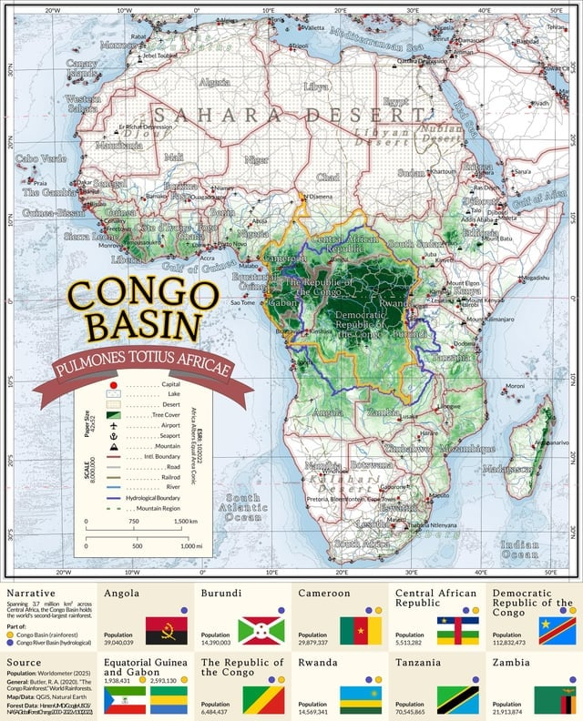

콩고 분지
지구에서 아마존 다음으로 큰 밀림인데
아직도 상당 부분이 미개척지
인간의 손이 닿은 적 없는 곳들이 많음

그 크기 자체도 어마어마한 밀림인데
왜 미개척지냐?
아주 빽빽한 밀림이 들어서서 탐험하기도 어려울 뿐더러
지난 반세기 동안 정치적 불안, 반군, 전쟁 등으로 탐험가들이나 학자들이 연구를 위해 방문하는 것도 어려운 곳이기 때문
그래서 온갖 크립티드들과 괴생명체 목격담들이 흘러나오는 곳이기도하고
동시에 인간의 손이 닿지 않은 덕분에 많은 동물들의 마지막 낙원이기도 함
이거보고 구글어스 들어가서 보니까 존나 신기하네
서울-부산 거리인데 조그마한 마을만 몇개씩 흩어져있네